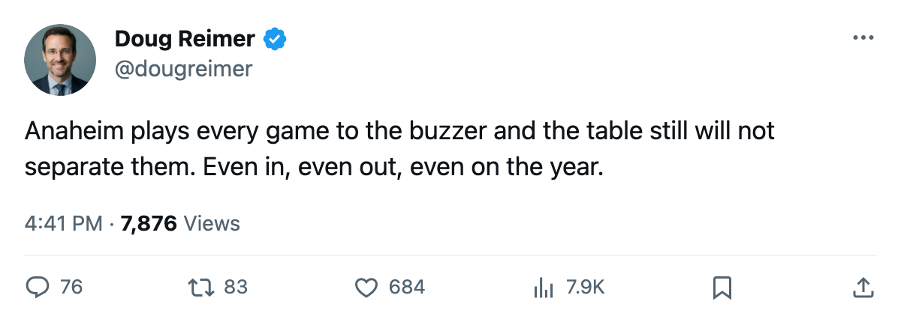
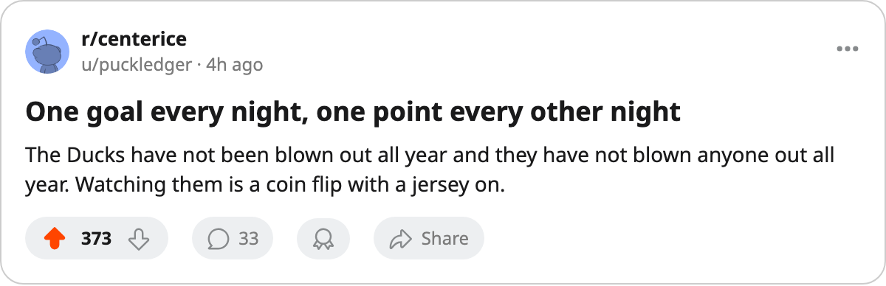

CHI
CHI EDM
EDM SJ
SJ STL
STL LA
LAEleven Season Series, Four or Five Meetings, Not One Game by More Than a Goal
The record lists 20 of the season's closest series. Eleven of them have never seen a blowout. Anaheim plays in six of the twenty, and its goal differential is zero.
 Doug ReimerAnalytics editor, ex-video coach · The Slot Report
Doug ReimerAnalytics editor, ex-video coach · The Slot Report
Eleven season series in this league have gone four or five meetings without a single game decided by more than one goal. The record's closest-series table lists 20 series; the other 9 have produced at least one two-goal night.
The method is the table's own. Count the meetings, count the one-goal games, and read the goals for and against. Where those two counts match, the series has not separated anybody. It only looks like it has.
| series | met | one-goal games | goals | record |
|---|---|---|---|---|
| EDM v MIN | 5 | 5 | 15-20 | 0-3-2 to MIN |
| ANA v CHI | 4 | 4 | 12-10 | 2-0-1 (+1 OT) to ANA |
| ANA v EDM | 4 | 4 | 11-11 | 1-1-1 (+1 OT) to ANA |
| ANA v SJ | 4 | 4 | 11-9 | 2-1-0 (+1 OT) to ANA |
| ANA v STL | 4 | 4 | 14-14 | 0-2-0 (+2 OT) to STL |
| BOS v WSH | 4 | 4 | 15-17 | 1-1-2 to WSH |
| CAR v NJ | 4 | 4 | 15-17 | 0-1-2 (+1 OT) to CAR |
| CHI v VAN | 4 | 4 | 10-14 | 0-3-1 to CHI |
| DET v LA | 4 | 4 | 12-16 | 0-1-3 to LA |
| DET v SJ | 4 | 4 | 12-10 | 1-1-0 (+2 OT) to DET |
| FLA v MTL | 4 | 4 | 11-9 | 3-1-0 to FLA |
The goals column is the first club's, for and against.
Anaheim is in six of the twenty
 Mighty Ducks of Anaheim appears in six of the record's tightest series, more than any other club. Against Chicago, Edmonton, San Jose and St. Louis every meeting went to one goal. Against Los Angeles and Phoenix, four of the five did.
Mighty Ducks of Anaheim appears in six of the record's tightest series, more than any other club. Against Chicago, Edmonton, San Jose and St. Louis every meeting went to one goal. Against Los Angeles and Phoenix, four of the five did.
The Ducks sit 6th in the West with 90 points, a goal differential of 0, 213 goals scored and 213 allowed. They have won 8 games in overtime and lost 14, tied with Florida for the most overtime losses in the league. Six games remain.
Their series with St. Louis is the cleanest example: four meetings, four one-goal games, 14 goals to 14, and the Blues won two of them in overtime. Their series with Edmonton reads the same at 11 goals to 11. When a club plays this many games to the buzzer, the goal column stops describing anything. A season series can be perfectly level and still hand one side the points.

A tight series is not always a close one
The counterweight sits two rows down. Chicago and Vancouver met four times and every game was decided by one goal. The goals read 10 to 14 and the Blackhawks took 1 point from the four games, a record of 0-3-1. Four one-goal games, one point. The series was never out of reach and was never really in it either.
Edmonton and Minnesota is the extreme of the other kind. Five meetings, five one-goal finishes, 15 goals to 20, and the Wild won 3 of the 5, with the Oilers taking 2 overtime points from the losses. Neither club has a meeting left this season, so the series is closed at five games and one goal of margin every time.
Detroit supplies a quieter line. The Red Wings lost three of their four games with Los Angeles by a single goal, all of them in overtime or in the last minute of a tie, a record of 0-1-3 that reads like a sweep and paid 3 points.
What the table cannot tell you is whether any of it repeats in a playoff round. The record carries no bracket and no seeding, so a series that went to the wire four times settles nothing about a fifth meeting. It does say which clubs have spent the season on the edge, and Anaheim has spent more of it there than anyone. The Ducks have 6 games left to make the 213-213 line read differently, and the schedule is not offering them a soft one.

